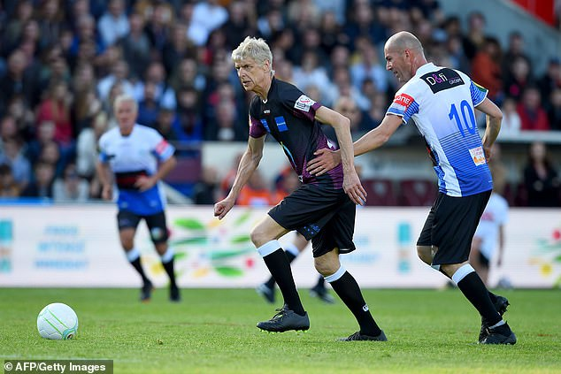
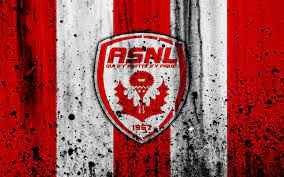
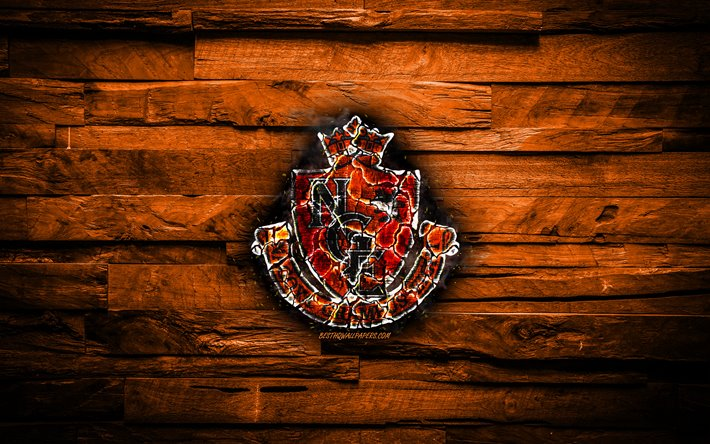
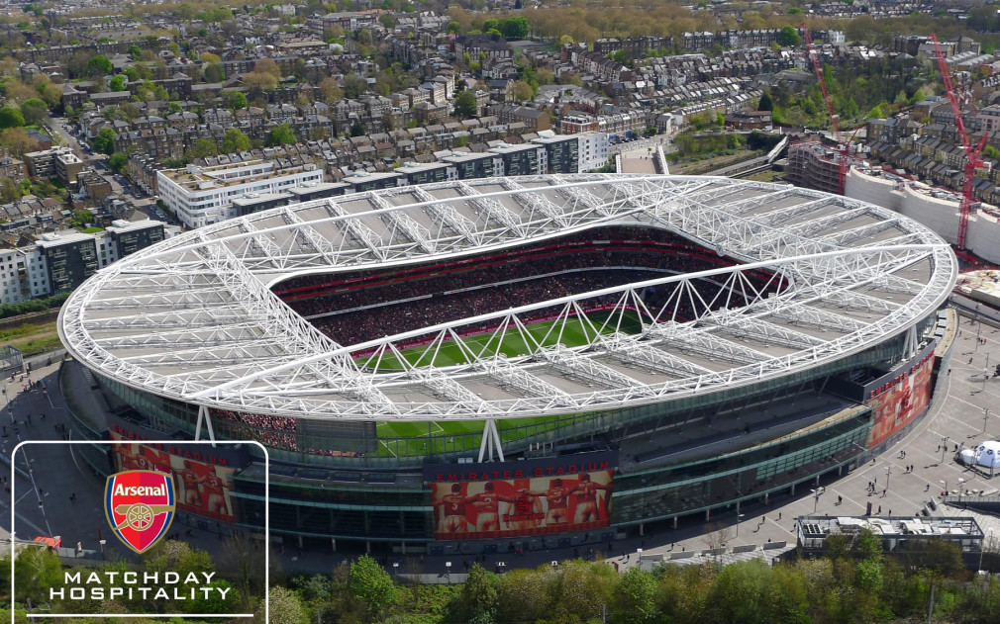
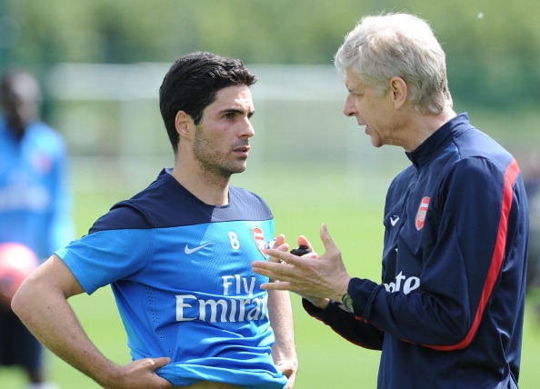

Tiểu sử HLV A.WENGER
Tên Khác: Giáo sư bóng đá A.Wenger
Tác giả: Trọng Sport
Tình trạng: Đang Cập Nhật
Thống kê: -Like: 0 -Tim: 0 -Lượt xem: 0
Thể loại : Tiểu sử
Tóm tắt :
Arsène Wenger, OBE (phát âm tiếng Pháp: [aʁsɛn vɛŋ(ɡ)ɛʁ]; sinh ngày 22 tháng 10 năm 1949) là cựu huấn luyện
viên
bóng đá người Pháp. Ông là huấn luyện viên tại vị lâu nhất trong lịch sử các câu lạc bộ bóng đá, và đã dẫn
dắt
đội bóng Arsenal giành được 17 danh hiệu kể từ năm 1996 tới năm 2018. Wenger được sinh ra tại Strassbourg và
lớn
lên tại Duttlenheim. Ông được biết tới bóng đá từ người cha của mình, người khi đó đang làm huấn luyện viên
của
một câu lạc bộ bóng đá địa phương. Sau một thời gian chơi cho nhiều câu lạc bộ nghiệp dư, Wenger đã nhận
được
bằng tốt nghiệp của một huấn luyện viên vào năm 1981. Sau một khoảng thời gian không mấy thành công tại
Nancy,
câu lạc bộ đã thỏa thuận để ông rời khỏi câu lạc bộ năm 1987. Wenger sau đó đã làm huấn luyện cho AS Monaco,
câu
lạc bộ đã giành chức vô địch Pháp vào năm 1988. Năm 1991, ông dẫn dắt Monaco giành được chức vô địch Cúp
bóng đá
Pháp, nhưng không thể giúp Monaco giành được bất cứ danh hiệu nào trong mùa giải tiếp theo, và ông đã rời
câu
lạc bộ vào năm 1994. Ông huấn luyện một thời gian ngắn tại câu lạc bộ ở giải bóng đá vô địch quốc gia Nhật
Bản,
Nagoya Grampus Eight và giúp đội bóng này giành được Cúp quốc gia và Siêu cúp Nhật Bản.
Năm 1996, ông trở thành huấn luyện viên của Arsenal và hai năm sau đó đã giúp đội bóng này trở thành nhà vô
địch
của giải bóng đá Ngoại hạng Anh và FA Cup. Ông dẫn dắt Arsenal vào đến trận chung kết UEFA Cup 2000 và Chung
kết
FA Cup năm 2001. Năm 2002, ông giúp Arsenal giành ngôi á quân tại giải Ngoại hạng Anh và vô địch FA Cup.
Arsenal
đã bảo vệ thành công chức vô địch FA Cup 2003 và năm 2004 đã giành chức vô địch giải bóng đá Ngoại hạng Anh,
trở
thành câu lạc bộ đầu tiên trải qua một mùa giải bất bại sau Preston North End ở thời điểm 115 năm trước.
Arsenal
sau đó đã làm lu mờ kỷ lục của giải Ngoại hạng với 42 trận bất bại liên tiếp (phá kỉ lục của Nottingham
Forest
với 41 trận) và trải qua thêm bảy trận bất bại nữa mới phải nhận thất bại. Ông đã đưa Arsenal lần đầu tiên
vào
đến Chung kết Champions League, đó là vào năm 2006, mặc dù cho Arsenal thua Barcelona. Năm 2012, câu lạc bộ
trải
qua mùa giải thứ 15 liên tiếp, mặc dù họ có khởi đầu tồi tệ nhất sau 58 năm. Trong nhiệm kỳ của ông, Arsenal
đã
chuyển đến sân vận động Emirates thay cho sân Highbury vào năm 2006.
Biệt danh "Giáo sư"[2][3][4] được sử dụng bởi người hâm mộ và giới truyền thông Anh vì vẻ ngoài nghiêm nghị
của
Wenger.[3] Cách tiếp cận của ông vào trận đấu nhấn mạnh tâm lý tấn công, với chủ đích là người xem cần tính
giải
trí trên sân bóng đá. Arsenal của Wenger thường bị chỉ trích là có tính vô kỷ luật, cầu thủ của ông đã nhận
được
100 thẻ đỏ từ tháng 9 năm 1996 đến tháng 2 năm 2014, mặc dù đội bóng đã giành được giải thưởng dành Fair
Play.
Tại Monaco, Wenger có danh tiếng cho việc tìm kiếm tài năng trẻ, và tại Arsenal ông vẫn tập trung vào việc
phát
triển một hệ thống tài năng trẻ thanh thiếu niên, câu lạc bộ của ông phát triển cầu thủ trẻ thay vì mua
những
cầu thủ đắt tiền, những người có kinh nghiệm. Ông đã bị chỉ trích vì gắn bó chặt chẽ với các nguyên tắc của
mình, và các chuyên gia bóng đá đã đặt câu hỏi về tham vọng của ông để giành danh hiệu trong những năm gần
đây.
Ngày 20 tháng 4 năm 2018, trang chủ của Arsenal chính thức xác nhận HLV Arsene Wenger sẽ chia tay CLB vào
cuối
mùa giải 2017–18 sau 22 năm gắn bó để kết thúc sự nghiệp cầm quân của mình tại Arsenal.[5] Ông là huấn luyện
viên vĩ đại nhất mọi thời đại trong lịch sử của câu lạc bộ
Tập 1: TÔI SẼ LÀ CẦU THỦ HAY NHẤT

Wenger sinh ngày 22 tháng 10 năm 1949, tại Strasbourg, Alsace, với cha là Alphonse và mẹ là Louise Wenger. Ông
lớn lên ở làng Duttlenheim, cách 13 dặm về phía tây nơi sinh của ông, cùng với chị gái và em trai.[6] Alphonse,
như nhiều người Alsace, đã nhập ngũ vào quân đội Đức bởi việc kết hợp chặt chẽ các lực tấn công (tuyển dụng bằng
vũ lực) sau sự sáp nhập của Alsace-Lorraine trong Chiến tranh thế giới thứ hai.[7]
Mặc dù mang quốc tịch Pháp, nhưng Wenger lại không nói tiếng Pháp cho đến năm 7 tuổi, ông dùng phương ngữ Alsace
của tiếng Đức Hạ Alemanni.[8] Gia đình ông sở hữu một kinh doanh phụ tùng ô tô và một quán rượu nhỏ có tên La
Croix d'Or.[6] Wenger coi thời thơ ấu của mình như là "như được lớn lên trong một khu định cư" vì tất cả mọi
người chăm sóc trẻ em trong làng.[8] Ông suy nghĩ về giáo dục trong một địa chỉ để Hiệp hội huấn luyện viên của
giải đấu năm 2009, Wenger nói:
Không có giáo dục về tâm lý tốt hơn so với việc lớn lên trong một quán rượu bởi vì khi bạn là năm hay sáu tuổi,
bạn đáp ứng tất cả những người khác nhau và nghe cách tàn nhẫn của họ có thể được với nhau. Từ khi còn nhỏ bạn
đã có được một nền giáo dục tâm lý thực tế để có thể vào tâm trí của mọi người. Nó không phải là cậu bé năm, sáu
là luôn luôn sống chung với người lớn trong một ngôi làng nhỏ. Tôi đã học được về chiến thuật và lựa chọn cách
chơi từ những người nói về bóng đá trong quán rượu, đang chơi ở bên cánh trái và những người bên cánh phải ở
trong đội.[9]
Theo cha ông, huấn luyện viên của đội bóng đá làng, Wenger được giới thiệu về bóng đá khoảng 6 tuổi.[10] Ông
được đưa tới thi đấu ở Đức, nơi ông tổ chức đã có tình cảm đối với Borussia Mönchengladbach.[11] Vùng Alsace
được coi là một khu vực ngập tràn trong tôn giáo, nên ông và các chàng trai trong làng thường cần thiết tìm kiếm
sự cho phép từ linh mục Công giáo không đọc kinh chiều (lời cầu nguyện buổi tối) để chơi bóng đá.[12] Bởi vì dân
số của Duttlenheim ít, nó trở nên khó khăn cho việc đến trường của 11 cầu thủ trang lứa, Wenger đã không chơi
cho FC Duttlenheim cho đến khi 12 tuổi [13]
Wenger được tuyển vào câu lạc bộ hạng ba Mutzig ở tuổi 18[13] Câu lạc bộ này nổi danh vì "chơi bóng đá nghiệp
dư" trong vùng Alsace, do Max Hild làm quản lý, ông này sau trở thành cố vấn cho Wenger.[6] Sự nghiệp cầu thủ
của Wenger có phần khiêm tốn, chưa rõ vị trí ông chơi thế nào.[a], nhưng ông được mô tả bởi Marcel Brandner, chủ
tịch của FC Duttlenheim: "cậu ấy một khả năng để bảo vệ bóng, cậu ấy dường như có một tầm nhìn xa và cậu ấy chắc
chắn có ảnh hưởng giữa các đồng đội."[7]
Ông gia nhập Mulhouse vào năm 1973, nơi ông đã dành thời gian nghiên cứu cân đối tại Khoa Kinh tế và Quản lý
Khoa học, Đại học Strasbourg, ông đạt được một tấm bằng kinh tế[b] vào năm 1974.[21] Wenger đã nhận thức được
rằng, tầm quan trọng và lợi ích của việc nói tiếng Anh trong nghiên cứu của mình và ghi danh vào một khóa học
tiếng Anh ba tuần tại đại học Cambridge.[22] Sau hai mùa giải tại Mulhouse, trong thời gian đó ông đã 56 lần ra
sân trong giải đấu,[23] ông tái gia nhập Hild và ký hợp đồng với câu lạc bộ nghiệp dư ASPV Strasbourg vào năm
1975.[13]
Năm 1978, ông gia nhập RC Strasbourg và ra sân lần đầu tiên trong trận đấu với Monaco.[24] Ông đã ra sân 12 lần
cho đội bóng, giúp Strasbourg đoạt chức vô địch Ligue 1.[24] Wenger cũng đã 1 trận tại UEFA Cup.[23] Năm 1981,
ông nhận được tấm bằng huấn luyện viên và huấn luyện cho đội trẻ Strasbourg.[25]
Tập 2: AS.NANCY

Wenger làm trợ lý huấn luyện viên cho câu lạc bộ AS Cannes tại giải Ligue 2 năm 1983.[26] Một năm sau đó, thông
qua sự giới thiệu của Aldo Platini (cha của Michel Platini), ông trở thành huấn luyện viên của Nancy tại Ligue
1.[26] Đến hết mùa bóng 1984–85, mùa giải đầu tiên của ông trên cương vị huấn luyện viên, Nancy đứng ở vị trí
thứ 12 tại Ligue 1, cao hơn các mùa giải trước đó 3 bậc.[27] Tuy nhiên, mùa 1985–86 câu lạc bộ kết thúc ở vị trí
thứ 18, đồng nghĩa với việc phải thắng trận play-off mới có cơ hội trụ hạng.[26] Trong mùa giải cuối cùng của
Wenger phụ trách, Nancy chỉ đứng thứ 19 và bị xuống hạng Ligue 2.[26] Aldo, người bổ nhiệm Wenger vào chiếc ghế
huấn luyện viên trưởng, nói: "Đó không phải lỗi do anh ấy. Anh ấy không có tiền để chi tiêu".[26]
Trong thời gian ở Nancy, Wenger đã thu hút sự quan tâm của các câu lạc bộ tại Ligue 1, đặc biệt là câu lạc bộ AS
Monaco.[26] Trong việc tìm kiếm thách thức mới ở phía nam, ông đề nghị từ chức trước mùa 1986–87, tuy nhiên chủ
tịch Nancy, ông Jacques Rousselot đã phản đối.[28] Phải đến hết mùa giải 1986–87, khi Nancy xuống hạng, Wenger
đã được phép rời khỏi câu lạc bộ theo thoả thuận chung và gia nhập Monaco.[26]
Wenger xác định sẽ mua một vài cầu thủ để xây dựng đội bóng của mình mong muốn.[28] Tiền vệ của Tottenham
Hotspur, Glenn Hoddle, cầu thủ chuyển nhượng tự do, Patrick Battiston, hết hợp đồng tại Bordeaux, đã ký hợp đồng
với Monaco.[28] Tiền đạo Mark Hateley rời Milan để gia nhập Monaco và đã được khuyến khích chơi cùng Hoddle.[29]
Monaco giành chức vô địch trong mùa giải đầu tiên của Wenger, hơn sáu điểm trước á quân Bordeaux.[30] Mặc dù đội
ghi nhiều bàn thắng hơn trong 1988–1989 do đã mua tiền đạo người Liberia George Weah nhưng đã không thể bảo vệ
chức vô địch khi về thứ ba chỉ sau Marseille và Paris Saint-Germain.[31] Câu lạc bộ vào đến chung kết của cúp
quốc gia Pháp nhưng thua 4–3 trước Marseille.[32]
Monaco một lần nữa đứng thứ 3 trong mùa bóng 1989–90. Tiền đạo Ramón Díaz đã ghi 15 bàn trong mùa giải đầu tiên
của mình tại câu lạc bộ[33][34] Câu lạc bộ đánh bại Marseille trong trận chung kết Cúp quốc gia vào năm 1991,
với bàn thắng ở phút bù giờ thứ nhất của cầu thủ vào sân thay người Gérald Passi[32] Mùa bóng 1991–92, Monaco
đứng ở vị trí thứ nhì và thua trong trận chung kết European Cup Winners' Cup 1992 với tỷ số 0–2 trước Werder
Bremen.[35] Mặc dù Monaco có được sự phục vụ của tiền đạo người Đức Jurgen Klinsmann, câu lạc bộ có thể không
giữ lại chức vô địch và kết thúc các mùa tiếp theo ở vị trí thứ ba và thứ chín.[36][37] Monaco đã lọt vào bán
kết của Champions League vào tháng 4 năm 1994, nhưng đã để thua đội vô địch mùa bóng đó là Milan.[38] Như một
kết quả của công việc tại Monaco, Wenger sau khi tìm được câu lạc bộ Đức Bayern München, những người muốn ông là
huấn luyện viên tiếp theo của họ.[39] Monaco đã từ chối và Wenger quyết định ở lại, nhưng một sự khởi đầu nghèo
nàn trong mùa giải 1994–95, ông đã bị sa thải khi Monaco chỉ đứng vị trí thứ 17.[40] Năm 2001, Wenger nói rằng
tác động của hối lộ và tham nhũng đã ảnh hưởng đến quyết định của ông rời khỏi nước Pháp, như Marseille đã bị
phát hiện có tội trong một trận đấu vào năm 1994.[41].
Tập 3: AS MONACO

Wenger xác định sẽ mua một vài cầu thủ để xây dựng đội bóng của mình mong muốn.[28] Tiền vệ của Tottenham
Hotspur, Glenn Hoddle, cầu thủ chuyển nhượng tự do, Patrick Battiston, hết hợp đồng tại Bordeaux, đã ký hợp đồng
với Monaco.[28] Tiền đạo Mark Hateley rời Milan để gia nhập Monaco và đã được khuyến khích chơi cùng Hoddle.[29]
Monaco giành chức vô địch trong mùa giải đầu tiên của Wenger, hơn sáu điểm trước á quân Bordeaux.[30] Mặc dù đội
ghi nhiều bàn thắng hơn trong 1988–1989 do đã mua tiền đạo người Liberia George Weah nhưng đã không thể bảo vệ
chức vô địch khi về thứ ba chỉ sau Marseille và Paris Saint-Germain.[31] Câu lạc bộ vào đến chung kết của cúp
quốc gia Pháp nhưng thua 4–3 trước Marseille.[32]
Monaco một lần nữa đứng thứ 3 trong mùa bóng 1989–90. Tiền đạo Ramón Díaz đã ghi 15 bàn trong mùa giải đầu tiên
của mình tại câu lạc bộ[33][34] Câu lạc bộ đánh bại Marseille trong trận chung kết Cúp quốc gia vào năm 1991,
với bàn thắng ở phút bù giờ thứ nhất của cầu thủ vào sân thay người Gérald Passi[32] Mùa bóng 1991–92, Monaco
đứng ở vị trí thứ nhì và thua trong trận chung kết European Cup Winners' Cup 1992 với tỷ số 0–2 trước Werder
Bremen.[35] Mặc dù Monaco có được sự phục vụ của tiền đạo người Đức Jurgen Klinsmann, câu lạc bộ có thể không
giữ lại chức vô địch và kết thúc các mùa tiếp theo ở vị trí thứ ba và thứ chín.[36][37] Monaco đã lọt vào bán
kết của Champions League vào tháng 4 năm 1994, nhưng đã để thua đội vô địch mùa bóng đó là Milan.[38] Như một
kết quả của công việc tại Monaco, Wenger sau khi tìm được câu lạc bộ Đức Bayern München, những người muốn ông là
huấn luyện viên tiếp theo của họ.[39] Monaco đã từ chối và Wenger quyết định ở lại, nhưng một sự khởi đầu nghèo
nàn trong mùa giải 1994–95, ông đã bị sa thải khi Monaco chỉ đứng vị trí thứ 17.[40] Năm 2001, Wenger nói rằng
tác động của hối lộ và tham nhũng đã ảnh hưởng đến quyết định của ông rời khỏi nước Pháp, như Marseille đã bị
phát hiện có tội trong một trận đấu vào năm 1994.[41].
Tập 4 NAGOYA GRAMPUS EIGHT

Tháng 1 năm 1995, ông trở thành huấn luyện viên câu lạc bộ Nhật Bản Nagoya Grampus Eight.[42] Ông đã thuê
cựu huấn luyện viên Valenciennes Boro Primorac, người mà ông đã kết bạn với năm 1993, là trợ lý của ông.[43]
Wenger hỗ trợ đầy đủ các huấn luyện viên đến từ Nam Tư khi ông đưa ra bằng chứng trước Marseille trong trận
đấu ấn định.[43] Primorac vẫn là cánh tay phải của Wenger trong những năm sau đó và cho đến năm 2012 vẫn giữ
vị trí này.[44]
Wenger được hưởng một thời gian thành công 18 tháng với câu lạc bộ, khi Nagoya Grampus đã giành chức vô địch
Cúp quốc gia, Cúp Nhà Vua Nhật Bản, trong mùa giải đầu tiên của mình và ông đã nhận được giải Huấn luyện
viên J.League của năm vào năm 1995.[45] Trong mùa cuối cùng của ông, Nagoya Grampus đã hoàn thành mùa giải ở
vị trí á quân trong bảng xếp hạng. Đây là vị trí tốt nhất của đội bóng đến năm 2010, khi cựu học trò của ông
Dragan Stojkovic Wenger dẫn dắt câu lạc bộ tới danh hiệu đầu tiên của họ.[46]
Tập 5: ARSENAL_1

1996–2003
Tháng 8 năm 1996, Arsenal sa thải huấn luyên viên Bruce Rioch.[47] Mặc dù cựu cầu thủ của Barcelona, Johan
Cruyff muốn ngồi vào chiếc ghế nóng, nhưng Arsenal lại bổ nhiệm Wenger làm huấn luyện viên trưởng ngày 30
tháng 9 năm 1996.[48] Ông chính thức đảm nhận vị trí này vào ngày hôm sau.[49] Wenger là một người bạn thân
của phó Chủ tịch câu lạc bộ Arsenal David Dein, người mà ông gặp nhau lần đầu trong trận đấu giữa Arsenal và
Queen Park Rangers vào năm 1988.[50] Mặc dù trước đó ông đã được chào mời như là một giám đốc kỹ thuật của
Liên đoàn bóng đá,[51] nhưng Wenger lúc đó vẫn chưa am hiểu lắm về bóng đá Anh, tờ Evening Standard đã có
một cuộc hẹn với ông mang tiêu đề "Arsène Who?".[52]
Một tháng trước khi chính thức trở thành huấn luyện viên của đội bóng, Wenger thông báo câu lạc bộ đã ký hợp
đồng với tiền vệ người Pháp Patrick Vieira và Rémi Garde.[53] Trận đấu đầu tiên của ông là chiến thắng 2–0
trước Blackburn vào ngày 12 tháng 10 năm 1996,[54] nhưng ông đã đề nghị "một hoặc hai thay đổi" để Rat Rice
làm huấn luyện viên tạm trong thất bại của đội Borussia Mönchengladbach, tại UEFA Cup vào ngày 25 tháng 9
năm 1996.[55] Arsenal đứng thứ ba trong mùa giải đầu tiên của Wenger và bỏ lỡ Champions League (vị trí thứ
hai thuộc về Newcastle) vì hiệu số bàn thắng bại - được sử dụng để xác định sự khác biệt giữa số bàn thắng
của cả hai câu lạc bộ đã ghi bàn và để thủng lưới.[56]
Trong mùa giải thứ hai, Arsenal giành được Premier League và FA Cup để hoàn thành cú đúp trong lịch sử của
câu lạc bộ.[57] Đội bóng đá tạo ra khoảng cách 12 điểm với Manchester United trong vài tuần cuối cùng của
mùa giải.[58] Thành công của Arsenal dựa trên một hàng phòng thủ kiên cố, vững chắc do người huấn luyện viên
cũ George Graham để lại, bao gồm Tony Adams, Steve Bould, Nigel Winterburn, Lee Dixon và Martin Keown. Các
hậu vệ đã góp một phần vào tám trận giữ sạch lưới liên tiếp từ giữa tháng 1 đến tháng 3 năm 1998.[59] Wenger
coi tiền đạo Dennis Bergkamp là "điểm nhấn" cho phong độ tốt của đội bóng vào cuối mùa giải.[60] Bản hợp
đồng mới, Petit như một đối tác cho Vieira, cầu thủ chạy cánh Marc Overmars và tiền đạo Nicolas Anelka cũng
hưởng lợi từ những huấn luyện viên thông minh trong việc quản lý.[61]
Mùa bóng sau là một mùa bóng không thành công, bằng một loạt danh hiệu bị bỏ lỡ. Mùa 1998–99, đội bóng không
bảo vệ thành công chức vô địch, chỉ đứng thứ hai sau Man Utd.[62] Man Utd cũng đã loại Arsenal tại bán kết
Cúp FA, với bàn thắng được ghi bởi Ryan Giggs, sau trận đấu Wenger đã nói, "đó không phải là đêm của chúng
tôi và chúng tôi đã không may mắn".[63] Mùa bóng 1999–2000 Arsenal lọt đến chung kết UEFA Cup nhưng thua
trước Galatasaray trên chấm penalty với tỷ số 5–4.[64] Năm 2001, Arsenal lọt đến chung kết FA Cup nhưng đã
thua Liverpool, mặc dù họ chiếm ưu thế trong phần lớn thời gian trận đấu.[65] Trong thời gian không có danh
hiệu, Overmars và Petit đã gia nhập Barcelona và Wenger đã liên kết với một động thái huấn luyện ở đó.[66]
Nhưng thay vào đó ông ký hợp đồng mới có thời hạn thêm bốn năm với câu lạc bộ trong tháng 7 năm 2001.[67]
Arsenal thực hiện một số bản hợp đồng trong mùa hè, đặc biệt là sự xuất hiện gây tranh cãi của hậu vệ Sol
Campbell, theo dạng chuyển nhượng tự do, từ đối thủ cùng thành phố Tottenham Hotspur[68] và tiền vệ Giovanni
van Bronckhorst từ Rangers.[69] Fredrik Ljungberg, Thierry Henry và Robert Pirès, những cầu thủ được mua từ
mùa trước, đưa đưa lên đội hình 1.[70][71]
Tập 6: ARSENAL 2
Arsenal lại giành cú đúp danh hiệu một lần nữa trong mùa giải 2001–02.[72] Những khoảnh khắc tột đỉnh là
chiến thắng trước Manchester United tại Old Trafford trong trận đấu áp chót của mùa giải.[72] Tiền đạo
Sylvain Wiltord ghi bàn thắng để giúp câu lạc bộ giành chức vô địch thứ, bốn ngày trước đó, Arsenal đánh bại
Chelsea 2–0 trong trận chung kết FA Cup 2002.[73] Đội bóng đã ghi bàn trong tất cả các trận đấu của giải
đấu, và bất bại trên sân khách.[73]
Mùa bóng 2002–03 là một mùa bóng thành công của Arsenal. Họ đã vượt qua các kỷ lục 22 trận bất bại của
Nottingham Forest và 29 trận bất bại của Man Utd.[74] Wenger nhận định rằng nếu thi đấu tốt họ sẽ có một mùa
giải bất bại.[c] Thế nhưng chuỗi trận bất bại của Arsenal đã bị chặn đứng, khi họ thua 2–1 trước Everton bởi
bàn thắng của cầu thủ trẻ Wayne Rooney.[76][77] tuy nhiên hơn tám điểm với Man Utd trong tháng 3 năm
2003.[78] Tuy nhiên trong những tuần cuối cùng của mùa bóng, Manchester United đã vượt qua Arsenal, do đội
bóng hòa 2–2 với Bolton và thua trên sân nhà trước Leeds United.[78] Tuy nhiên họ lại được bù đắp bởi chức
vô địch FA Cup năm 2003 sau chiến thắng trước Southampton với tỷ số 1–0.[79] Wenger bác bỏ ý kiến cho rằng
đó là một mùa giải bất bại và cho biết:
Tất nhiên là chúng tôi muốn giành chiến thắng trong tất cả các giải đấu, nhưng tôi nghĩ rằng điều khó khăn
nhất cho câu lạc bộ là phải được đoàn kết và chúng tôi đã được đáng kể công việc trên. Chúng tôi bị mất các
giải đấu về tay một đội bóng [Manchester United], họ dành số tiền trên 50% mỗi năm - năm cuối cùng họ đã mua
một cầu thủ với giá 30 triệu Bảng Anh. Và khi họ bị mất chức vô địch thì họ sẽ quyét tâm đòi lại trong mùa
tiếp theo, và chúng tôi đã phải chiến đấu với họ.[80]
Tập 7: ARSENAL 3
Mùa giải 2003–2004 là một mùa giải đại thành công với Wenger. Họ trở thành đội bóng đầu tiên không thua một trận
nào tại giải ngoại hạng Anh[81] (nếu tính cả giải hạng nhất trước 1892 thì họ là đội bóng thứ hai sau Preston
North End 115 năm trước có được thành tích này) và Wenger cũng trở thành huấn luyện viên duy nhất có được thành
tích này trong lịch sử giải bóng đá Ngoại hạng Anh. Wenger, người đã nói đến các đề xuất Arsenal bất bại, phản
ảnh rằng ông nói "hơi quá sớm".[82] Arsenal tiếp tục làm kỷ lục 49 trận bất bại cho đến khi thua trước Man Utd
vào ngày 24 tháng 10 năm 2004.[83] Arsenal thi đấu tương đối tốt ở mùa bóng 2004–05, về nhì sau Chelsea, khi đội
bóng Tây London hơn Arsenal 12 điểm.[84] Tuy nhiên họ cũng có danh hiệu FA Cup, khi đánh bại Man Utd trên loạt
sút luân lưu trong trận chung kết không bàn thắng.[85]
Arsenal có hai mùa bóng không mấy thành công trong các mùa 2005–06 và 2006–07. Đội bóng chỉ về thứ tư trong cả
hai mùa giải và lần đầu tiên ở ngoài top 4 dưới triều đại của Wenger.[86][87] Câu lạc bộ lọt đến chung kết
Champions League lần đầu tiên vào năm 2006, nhưng thua 1–2 trước Barcelona.[88] Mùa hè năm 2006, Arsenal chuyển
đến sân vận động Emirates, Wenger cho rằng số chỗ ngồi tăng lên là nguồn lực tài chính cho câu lạc bộ.[89] Họ
lọt tới chung kết League Cup 2007, Wenger tung ra sân đội hình trẻ và thua trước Chelsea.[90]
Sự ra đi của Dein năm 2007 và đội trưởng Henry chuyển sang Barca vào tháng 6, Wenger cũng chưa chắc chắn ở lại
Arsenal trước khi mùa bóng 2007–08 khởi tranh. Tháng 9 năm 2007, ông ký hợp đồng thêm ba năm với Arsenal, nhấn
mạnh rằng, "Đây là câu lạc bộ của cuộc đời tôi".[91] Arsenal đã có một khởi đầu tốt trong các giải đấu và trở
thành đội bóng đầu tiên đạt 60 điểm trong tháng 2 năm 2008.[92] Một chấn thương đe dọa đến sự nghiệp của tiền
đạo Eduardo trong trận gặp Birmingham ngày 23 tháng 2 năm 2008, khi đó Wenger đã chỉ trích Martin Taylor nhưng
sau đó đã rút lại.[93] Ba trận không thắng trong tháng ba đã khiến cho Arsenal bị Man Utd và sau đó là Chelsea
vượt mặt. Họ kết thúc mùa giải ở vị trí thứ ba[94], cho dù Emmanuel Adebayor lập hat-trick trong trận thắng 6–2
trước Derby, trở thành cầu thủ duy nhất trong lịch sử Giải Ngoại hạng lập hat-trick ở cả lượt đi và lượt về
trước một đội bóng.[95][96]
Arsenal đã có một khởi đầu khó khăn trong mùa bóng thứ 12 của Wenger. Họ bán đi đội trưởng William Gallas, sau
đó chỉ định Cesc Fabregas làm đội trưởng.[97] Arsenal đứng thứ tư trên bảng xếp hạng và lọt vào bán kết
Champions League và FA Cup, nhưng Wenger đã bị chỉ trích bởi người hâm mộ.[98] Arsenal đứng thứ ba mùa giải
2009–10[99] và lọt đến tứ kết Champions League nhưng thua trước Barcelona.[100] Hiệu suất ghi bàn của tiền đạo
Lionel Messi khiến Wenger phải công nhận Messi là "cầu thủ xuất sắc nhất thế giới".[100]
Tập 8: ARSENAL 5
Trong tháng 8 năm 2010, Wenger đã ký hợp đồng thêm ba năm để tiếp tục sự nghiệp huấn luyện của mình tại
Arsenal.[101] Câu lạc bộ đã để mất chức vô địch Carling Cup sau khi thua 1–2 trước Birmingham trong trận chung
kết, sau tình huống không hiểu ý giữa thủ môn Wojciech Szczesny và hậu vệ Laurent Koscielny giúp cho Obafemi
Martins của Birmingham ghi bàn.[102][103] Sau đó là chỉ hai chiến thắng trong 11 trận ở Premier League, kéo họ
từ cánh cửa đến danh hiệu chỉ kết thúc vị trí thứ tư.[104] Họ đã bị loại ở FA Cup và Champions League bởi
Manchester United[105] và Barcelona.[106] Đầu mùa bóng 2011–12, Arsenal đã bán đi hai cầu thủ quan trọng là Cesc
Fabregas và Samir Nasri. Chấn thương của các cầu thủ ngay lúc phải gặp Manchester United ngay vòng 3 và thua đậm
với tỷ số 2–8, đây là thất bại nặng nhất của Arsenal trong 115 năm qua.[107][108] Sau trận đấu, Sir Alex
Ferguson đã chỉ trích chính sách chuyển nhượng của Wenger.[109] Trận thua trước Tottenham vào đầu tháng 10 đã
khiến cho Arsenal khởi đầu tồi tệ nhất chỉ trong vòng 58 năm qua, với bốn thất bại sau bảy trận đấu.[110] Tuy
nhiên, phong độ chói sáng của đội trưởng Van Persie cuối mùa đã giúp cho Arsenal được dự Champions League lần
thứ 15 liên tiếp.[111] Persie đã ghi 37 bàn trong mùa này cho Arsenal sau khi bình phục chấn thương.[112] Tuy
nhiên ngày 17 tháng 8 anh này gia nhập Man Utd với giá 24 triệu Bảng và Wenger thừa nhận câu lạc bộ mua tiền đạo
Olivier Giroud và Lukas Podolski trước đó để thay thế Van Persie.[113] Wenger còn mua Santi Cazorla với giá
khoảng 16 triệu bảng.[114] Arsenal thi đấu tương đối tốt ở mùa giải 2012–13, họ đè bẹp Tottenham một lần nữa với
tỷ số 5–2.[115] Kết thúc năm 2012, Arsenal đứng ở vị trí thứ 5 sau chiến thắng 7–3 trước Newcastle[116] Wenger
đã bị kêu gọi từ chức sau trận thua 0–1 trước Blackburn ngay trên sân nhà tại vòng 5 FA Cup.[117] Họ đã lọt đến
vòng knock-out Champions League, nhưng thua trước Bayern München vì luật bàn thắng sân khách.[118] Khi mọi người
đang nghĩ đến việc Arsenal chỉ giành suất dự Europa League, thì họ đã có chuỗi 10 trận bất bại, trong đó có
chiến thắng 1–0 trước Newcastle vào vòng đấu cuối cùng đã giúp Wenger và Arsenal giành vé dự Champions League
lần thứ 16 liên tiếp.[119][120]Trong chuyến du đấu mùa hè 2013, Arsenal của Wenger đã giành chiến thắng lần lượt
là 7–0 và 7–1 trước đội tuyển tương ứng là Các Ngôi Sao Indonesia[121] và Việt Nam[122], trong chuyến du đấu
Nhật Bản, Pháo thủ lần lượt giành chiến thắng 3–1 và 2–1 trước các đội tương ứng là Nagoya Grampus[123] và Utawa
Reds[124]. Đầu mùa bóng mới, Arsenal phải nhận thất bại trước Aston Villa ngay trên sân nhà,[125] sau đó các
Pháo thủ đã mua cầu thủ người Đức Mesut Özil từ Real Madrid với giá 42,5 triệu Bảng Anh.[126][127] Hết giai đoạn
lượt đi, Arsenal có được thành tích khá tốt, nhưng hai trận thua trước Liverpool (tỉ số 5–1) và ngày 8 tháng
2[128] và Chelsea (tỉ số 6–0) ngày 22 tháng 3 đã phá hỏng tất cả.[129] Đặc biệt, trận thua 0–6 trên sân Stamford
Bridge diễn ra vào đúng trận đấu thứ 1000 của Wenger tại Arsenal.[130] Cuối mùa giải, dù chỉ về thứ tư nhưng các
học trò của Wenger vẫn giành được chiếc cúp FA sau khi đánh bại Hull City trong trận chung kết.[131] Sau thánh
tích ấy, Wenger đã ký hợp đồng 3 năm với các Pháo thủ.[132] Mùa hè 2014, Arsenal đã có được Alexis Sánchez từ
Barcelona, và trong mùa giải 2014–15 đã đưa Francis Coquelin và Héctor Bellerín lên đội 1.[133][134] Wenger đã
giúp Arsenal giành cúp FA thứ 12 sau khi đánh bại Aston Villa 4–0 trong trận chung kết.[135] Ngày 2/8/2015,
Arsenal đã giành Siêu cúp sau chiến thắng 1–0 trước Chelsea trong Siêu cúp Anh 2015.[136]
Mùa bóng 2015–2016, Arsenal được kỳ vọng sẽ giành được chức vô địch khi Chelsea hay Manchester United đồng loạt
suy yếu, nhưng rốt cuộc chỉ giành ngôi á quân và chức vô địch thuộc về Leicester City.[137] Sang mùa bóng
2016–2017, Arsenal thi đấu tương đối tốt ở lượt đi, nhưng những thất bại liên tiếp trên sân khách ở lượt về, đã
khiến Arsenal không thể giành chức vô địch, đồng thời ở UEFA Champions League, Arsenal để thua Bayern Munchen
với tỷ số 2–10 sau 2 lượt trận.[138] Thất bại đó cùng với làn sóng đòi sa thải Wenger rầm rộ trong tháng 3 năm
2017 đã ảnh hưởng phần nào đến thành tích của Arsenal.[139][140] Ngày 30/4/2017, Arsenal thua Tottenham 0–2
trong trận derby Bắc Luân Đôn và lần đầu tiên sau 22 năm Arsenal đứng dưới Tottenham ở giải Ngoại hạng.[141] Mặc
dù rất nỗ lực trong những vòng còn lại, nhưng Arsenal đã không thể cán đích trong top 4 đội dẫn đầu và không thể
dự Champions League sau 19 năm.[142] Tuy vậy, chiến thắng 2–1 trước Chelsea trong trận chung kết FA Cup đã đem
vè danh hiệu cúp FA lần thứ 13 cho Arsenal, đồng thời Wenger được gia hạn hợp đồng thêm 2 năm.[143][144]
Mùa hè năm 2017, Wenger đã phá kỷ lục chuyển nhượng của câu lạc bộ khi đem về Alexandre Lacazette với giá 45
triệu Bảng.[145][146] Ngày 6/8/2017, Wenger cùng Arsenal giành được Siêu cúp Anh sau khi thắng Chelsea ở loạt
luân lưu.[147] Tuy vậy, Arsenal thi đấu ở mùa giải 2017–2018 không được như kỳ vọng, họ dù thi đấu tốt trên sân
nhà nhưng sân khách rất tệ. Tuy vậy câu lạc bộ vẫn thi đấu tốt ở Europa League. Ngày 20/04/2018, trên trang chủ
CLB Arsenal xác nhận HLV Arsene Wenger sẽ chia tay CLB cuối mùa giải 2017–2018 sau 22 năm dẫn dắt.[148][149]
Trong trận đấu cuối cùng tại sân Old Trafford trên cương vị HLV trưởng Arsenal, Arsene Wenger đã nhận được sự
chào đón nồng hậu từ Sir Alex Ferguson, Jose Mourinho và cả người hâm mộ Manchester Utd. Trước khi trận đấu
thuộc vòng 36 giải Ngoại hạng Anh này diễn ra, Arsene Wenger đã nhận được món quà từ Sir Alex Ferguson: một
chiếc cúp bạc đặt trong chiếc hộp màu đen trang trọng. Trên món quà Sir Alex gửi tặng người bạn và cũng là đối
thủ lớn nhất trong sự nghiệp có ghi dòng chữ: "Thay mặt CLB Manchester United, Sir Alex Ferguson và Jose
Mourinho gửi tặng món quà đến Arsene Wenger như một sự công nhận về sự cống hiến và những thành tựu ông có được
cùng Arsenal từ năm 1996 đến 2018".[150][151]Ông có trận đấu cuối cùng trên sân nhà khi thắng Burnley
5-0[152][153] và tại Ngoại hạng anh khi thắng 1-0 trước Huddersfield Town trên sân khách[154]
Tập 9: NGƯỜI TIỀM NHIỆM

Năm 2018 HLV Wenger rời Arsenal, sau đó HLV Unai Emery lên thay nhưng không gặt hái được nhiều thành công và chỉ
về nhì tại Europa League dẫn đến năm 2019 ông đã bị sa thải
HlV Mikel Ateta một cựu cầu thủ của CLB đã lên thay và ông đã đạt giúp Asenal dành được chiếc cúp FA danh giá
khi đánh bại Chelsea trong trận chung kết.
{kind=link}